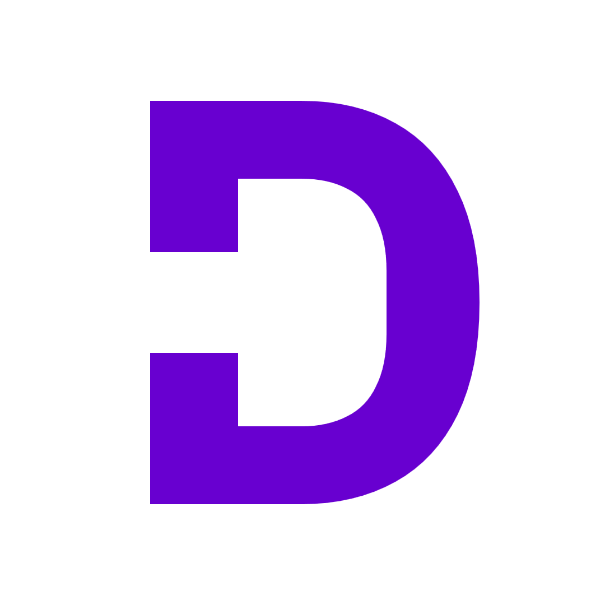
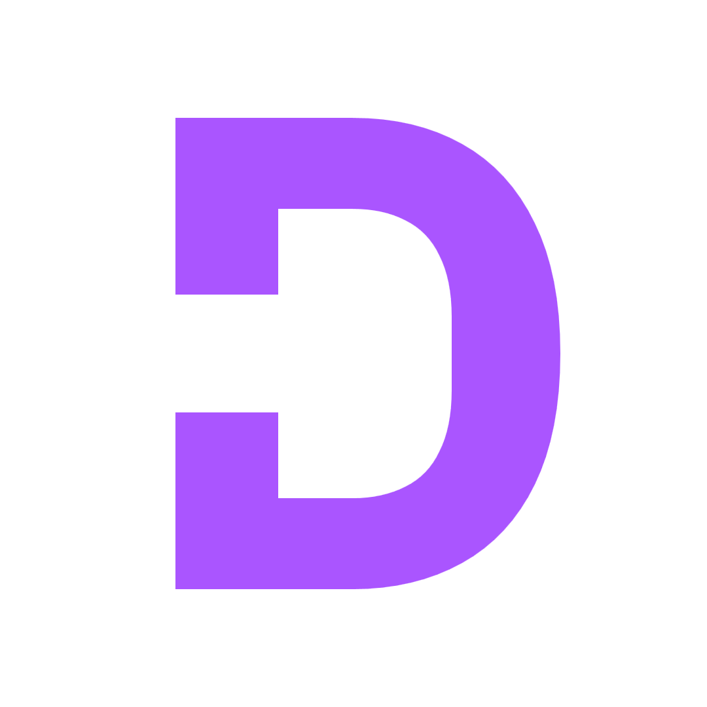
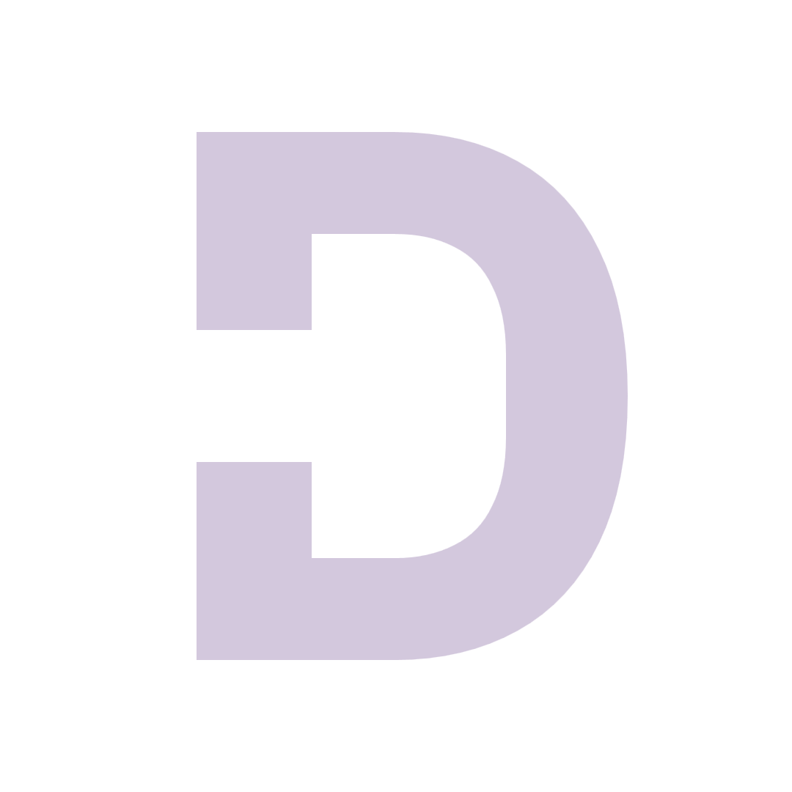
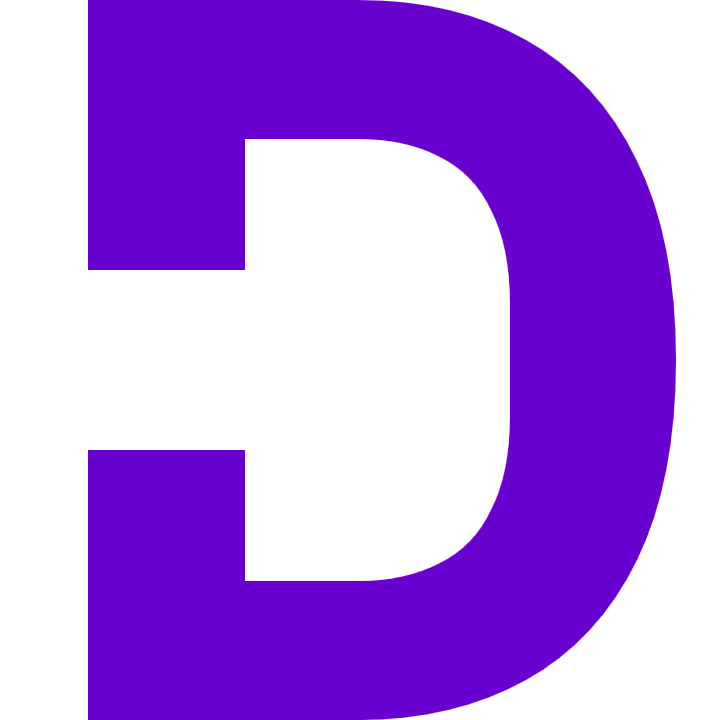
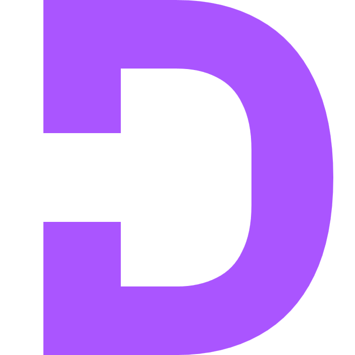
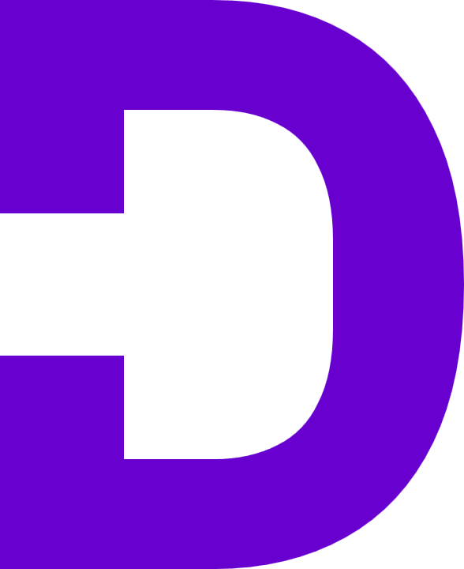
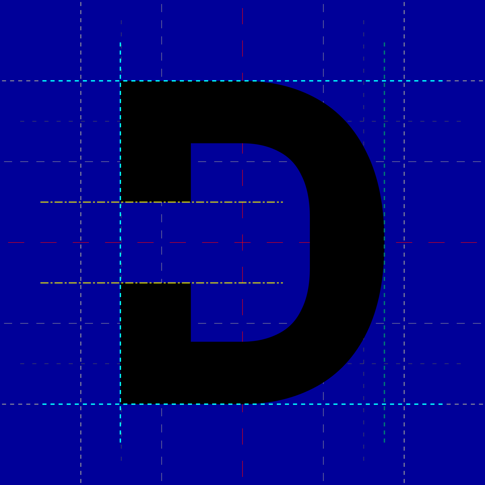
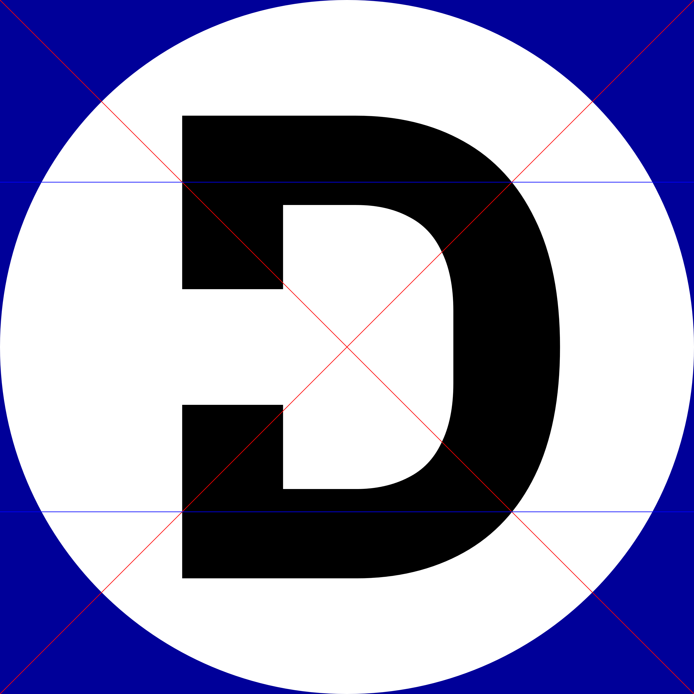

Logo variants
Regular



Inverted

No padding
Square


Rectangular

Copyright © 2026 Mindy Batek (0xEAB) — License: OFL-1.1.
This shape is derived from the bold glyph for the latin uppercase letter 'D' in the font "IBM Plex Sans".
Copyright © 2017 IBM Corp. with Reserved Font Name "Plex"
— License: OFL-1.1-RFN.







The logo is a grotesque sans-serif “D”-shaped glyph with an extraordinary aperture in its stem, opening its counter. Its shape is derived from the bold glyph for the latin uppercase letter “D” in the font “IBM Plex Sans”.
When padded, the “D” glyph has a slight x-offset to make it appear visually centered to the human eye.
Height: or vertical padding:
X-offset from left padding:
X-offset from a technically centered position:
Alternatively,
horizontally aligning it to the nearest -boundary
(i.e. off-center) may also work.
Circular
versions of the logo need a different x-offset in order to appear visually centered:
from left padding
Circular x-offset from a technically centered position:
The aperture in the stem is vertically centered and in height.
All provided fractions are relative to the border-box of the logo graphic.

